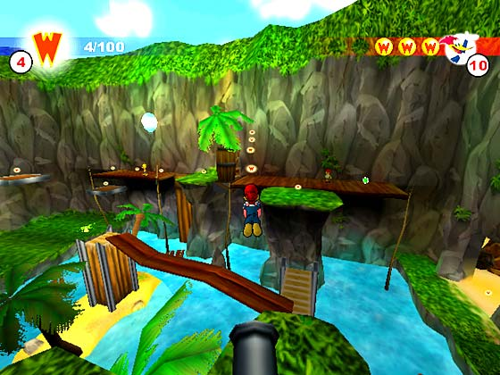
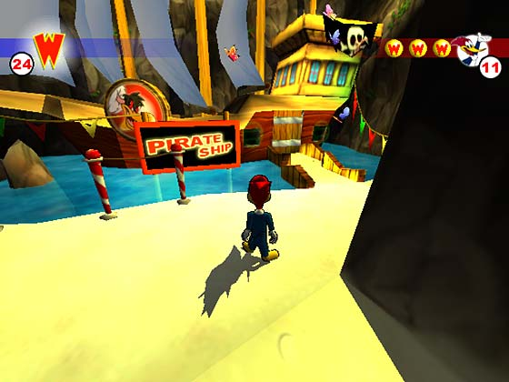
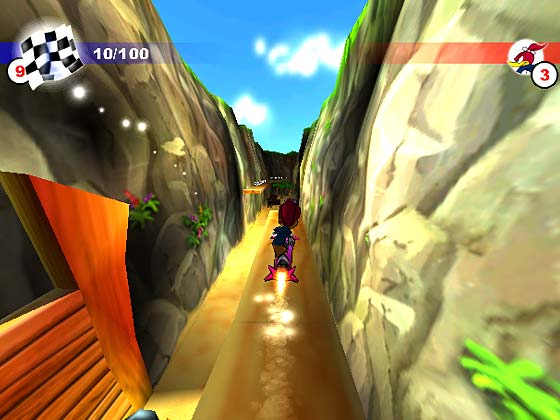

Правильная аркада – это когда в правильной пропорции смешаны: графика, узнаваемые герои, непонятный, свойственный только платформенным аркадам, геймплей. Если опираться на эти компоненты… то Вуди Вудпеккер – правильная аркада.
Сказать, что игра хорошая довольно просто. Опустить игру, куда подальше еще проще, а вот обосновать свою точку зрения уже проблематично. Проще говоря, о том, что Вуди мне понравился я уже упомянул, теперь попробую доказать правильность этого утверждения.
 |
| Вылетая из пушки…
|
|
Начнем, пожалуй, с возрастной категории, под которую попадает Вудпеккер. Не слушайте жадных до денег разработчиков – это отнюдь не детская игра. На такую мысль меня натолкнули некоторые обстоятельства. Как вам, например, тот факт, что бонусы, дополнительные жизни, и прочую аркадную лабуду можно (не обязательно, но желательно) выигрывать… на игровых автоматах. Знаете, «Однорукий Джек», называются. Или еще одно, правда тут я не совсем уверен, было так изначально или же наши локализаторы постарались, но на мой испорченный слух, звуки, которые издает дятел при падении, прямо-таки не совсем цензурно. Как видите, детишками от трех до шести, тут и не пахнет. Хотя, кто знает, какие сейчас дети бывают.
 |
| Впереди Вуди ждет встреча с пиратами
|
|
Все, что было написано выше – лирика. Перейдем к конкретике. Если вы посмотрите во вступление, то где-то среди бессмысленных знаков сможете отыскать прилагательное «платформенная». Это слово затесалось так совсем не случайно. Вуди Вудпеккер ни что иное, как обычный платформер. Нет, вру, не совсем обычный. Скорее «комбинированный». Все дело в том, что ВВ местами трехмерен, а местами почти полностью плосок. То есть иногда камера размещается сбоку и геймер, размяв косточки, вспоминает былые времена. Спешу успокоить поклонников прогресса, все-таки трехмерность в Вуди доминирует. Так же хочу отметить, что разработчики использовали движок от «Подарочка». Отсюда, и довольно красивый окружающий мир и не плохие спецэффекты. А вот, что откровенно подкачало, так это модели врагов, да и самого дятла. Они какие-то нарочито мультяшные, тем самым они выбиваются из общего колорита и смотрятся как-то глупо. Еще один камень кину в огород управления. Для детей оно довольно тяжелое или скорее неудобное. Нет в нем простоты, пальцы то и дело жмут не на ту клавишу, при все этом, нельзя сказать, что в Вудпеккере, задействовано много кнопок, просто они неудобно расположены(!). Несколько слов про сами уровни. Они разнообразны и интересны. Перечислять их не буду, потому как толку в этом нету. Отмечу лишь еще, что уровни довольно трудные и с первого раза не проходятся. И дело даже не в дизайнерах с их фирменной криворукостью. Скорее в этом виноваты управление и камера. Она кстати любит занимать не очень удачные позиции. Например, она не всегда висит за спиной у дятла. Иногда (скорее даже очень часто) повернувшись на сто градусов, вы видите морду дятла, а камера как висела так и продолжает… Это очень сильно напрягает, когда нужно прыгать с платформы, на платформу, а под вами бездна и падение к добру не доводит. Однако криминала в поведении камеры нет. В игре присутствует функция, с помощью которой вы можете видеть мир глазами дятла, при этом он двигаться не может. Очень рекомендую не забывать про эту возможность, так как зачастую важные элементы на уровне не разглядеть. Так вот после включения вида из глаз, а потом возвращения в нормальный режим, камера снова занимает свое законное место. Не скажу, что такая манипуляция меня сильно напрягала, но кайфу не добавляла.
 |
| Полет на ракете, по аркадному весел и не затейлив
|
|
Подведя черту под всем выше изложенным, скажу – игра удалась. Вот так просто и без излишеств. Зацепил меня чем-то Вудпеккер. И все вроде там как у всех, но в тоже время, есть что-то свое особенное, отличающие эту аркаду от сотен подобных. Никак, талант разработчиков, что же, если так, то давайте за них порадуемся.
Назад
Содержание
Вперед